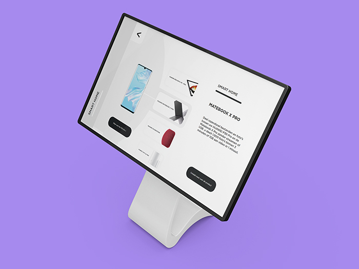
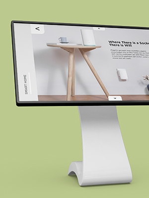

Huawei Mediamarkt Leidsenhage
Mijn rol
UX Design
Visual design
Prototyping
Development
UX Design
Visual design
Prototyping
Development
Jaar
2019, 2020
2019, 2020

Huawei wilde laten zien hoe hun producten in verschillende ‘werelden ’gebruikt kunnen worden. Home, sport & travel. In de nieuw geopende Mediamarkt in Leidschendam is een meubel neergezet waar verschillende Huawei producten op hangen, die met lichtbalken met elkaar verbonden zijn. Op drie tablets onder deze producten, zijn de verschillende werelden te ontdekken. De lichtbalken rond de producten reageren op wat de gebruiker doet.
